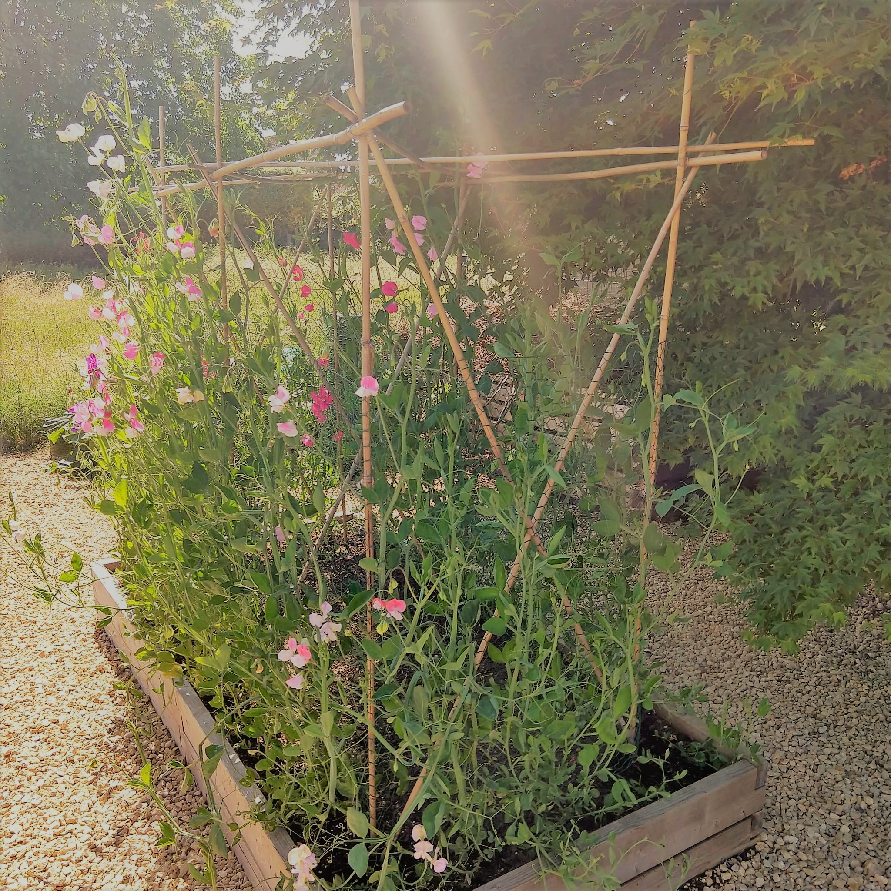
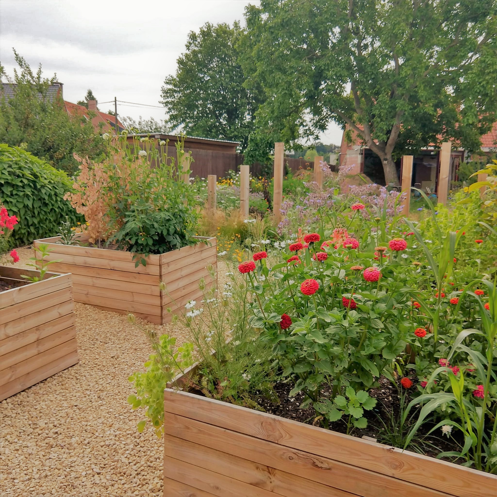
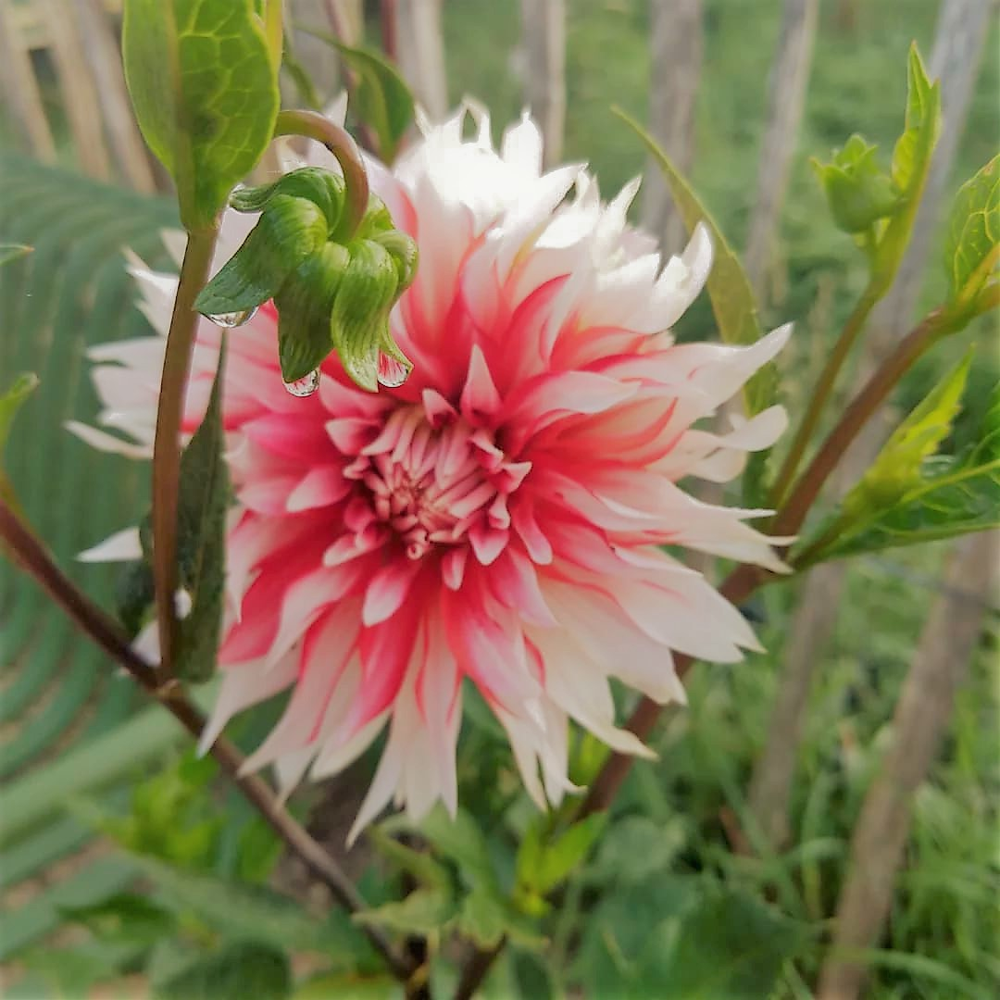
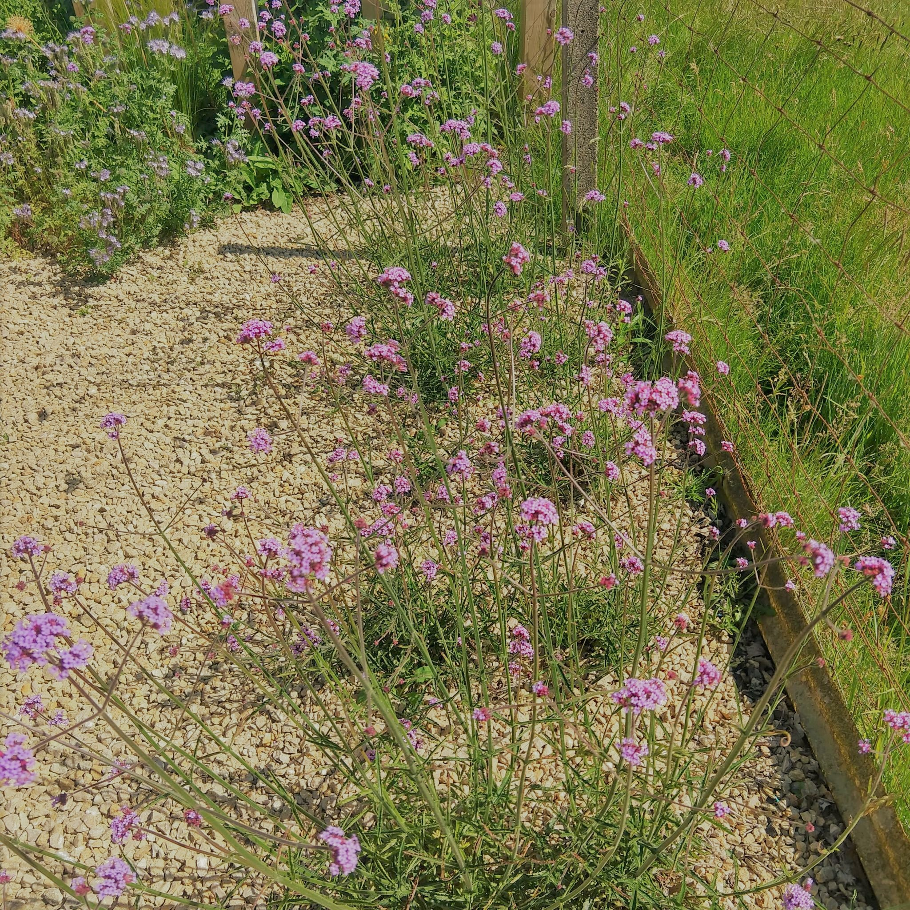
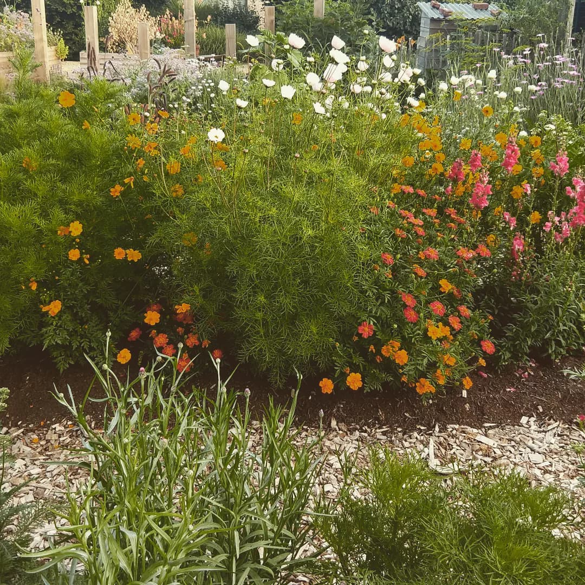

Beste plukkers,
Goede afspraken maken goede vrienden! Hieronder vind je de tuinregels en tips om zolang mogelijk genot te hebben van je plukboeket.
Tuinregels:
- Als je een afspraak gemaakt hebt, kan je gewoon vrij de tuin in en naar hartelust plukken.
- Gelieve emmers en snoeischaren zelf mee te brengen. Als je dit vergeten bent, zijn er hier ook voorradig, maar laat ze na het plukken terug netjes achter.
- Water om je emmer te vullen, kan je halen aan het buitenkraantje naast de keuken.
- Er worden enkel bloemen geplukt in de plukstroken, de plukbakken, de dahliaborders aan de zijkanten (ook in de grindtuin), de reukerwtenbak en de verbenaborder (in de grindtuin).
- Soms zal je oranje vlagjes zien staan; dit wil zeggen dat die soort niet mag geplukt worden (deze zullen later in het jaar als droogbloem beschikbaar zijn).
- Na het plukken doe je het snoeiafval in de compostbak.
- Je kan je boeketje samenstellen aan de tafel onder de notelaar. Daar vind je ook emmers, snoeischaren en inpakmateriaal indien gewenst.
Betalen:
- 0,50eur/stengel
- Dahlia 1eur/stengel
- Soms zijn er ‘bloemen van de dag’ in een extra emmer naast de schiktafel beschikbaar. Dit zijn bloemen die al over hun hoogtepunt heen zijn en minder lang bloei gaan geven. Hier reken je 0,25eur/stengel.
- Inpak + bindmateriaal = 1eur
- Je kan cash betalen in het potje of je kan betalen met de payconic app Hier geldt: eerlijk duurt het langst!
Tips:
- Pluk best niet op zonnigste moment van de dag. Dan gaan de bloemen langer mee in de vaas.
- Snijd de stelen schuin af. Daardoor kunnen de bloemen het beste voeding opnemen. Gebruik hiervoor een scherpe snoeischaar.
- Geplukt = meteen de emmer water in zodat de bloemen niet uitdrogen.
- Knip net boven een bladpaar. Dan kan de plant nieuwe scheuten vormen, is er langer bloei en dus meer bloemen om te plukken.
- Verwijder de onderste bladeren aan de steel zodat die niet in het water hangen. Dit voorkomt groei van bacteriën en verrotting.
- Zet de bloemen thuis nog even op een koele en donkere plaats zodat ze kunnen acclimatiseren.
- Zorg voor een propere vaas zodat bacteriën geen kans krijgen. Vul de vaas met ⅔ matig lauw water en doe er een schepje suiker bij als voeding. Ververs het water om de 2 dagen.
Veel plukplezier!




